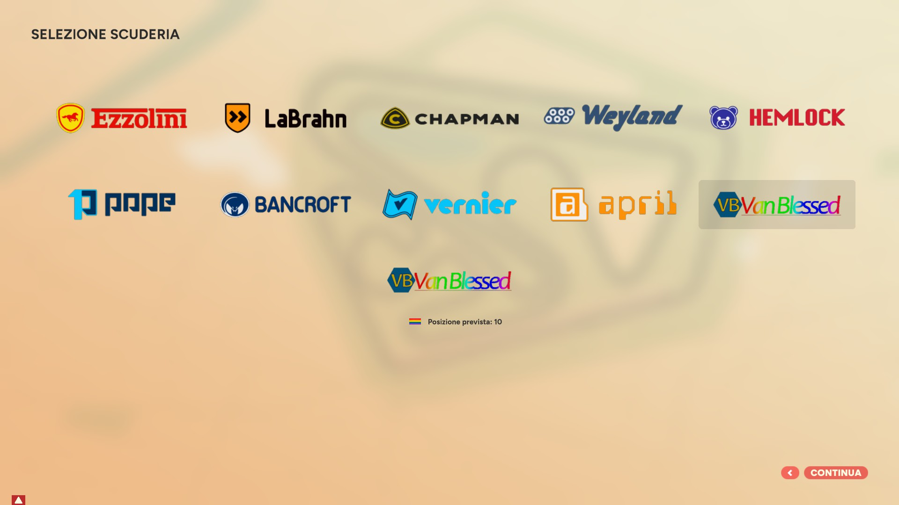
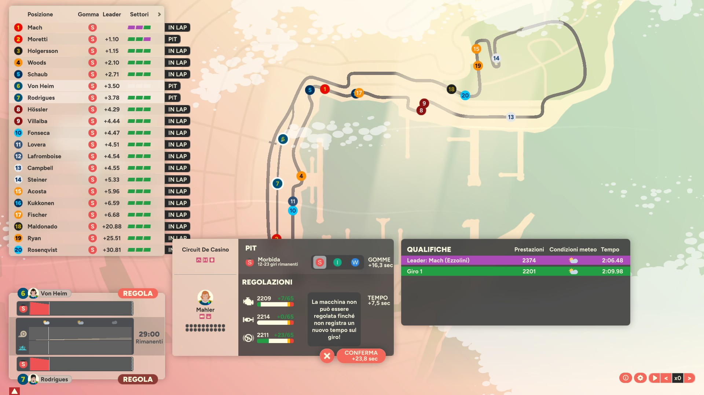
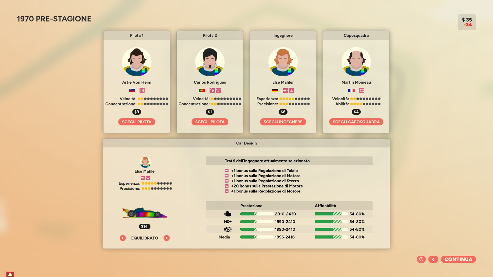
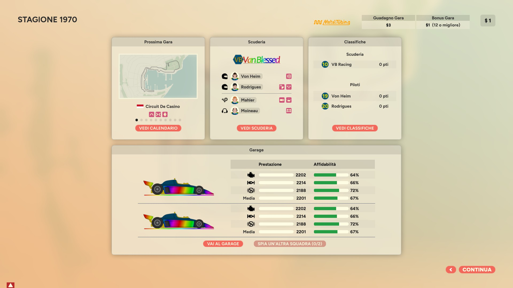

Golden Lap
Funselektor - Strelka Games (2024)
Indice
introduzione
Ho acquistato Golden Lap dopo aver giocato ad Art of Rally, sempre di Funselektor.
Mi è piaciuto lo stile minimale e la sensazione arcade ma non troppo di Art of Rally, e volevo riprovare un gestionale a tema F1 dopo che anni fa avevo lasciato perdere Motorsport Manager (2? 3?) per Android.
Golden Lap in due parole
di seguito userò il plurale sovraesteso, ma nel gioco i piloti, gli ingegneri e i caposquadra sono anche di genere femminile.
Si sceglie una scuderia, si compone la squadra in base ai soldi a disposizione, si sceglie uno sponsor principale, si inizia la stagione composta da 10 Gran Premi (GP).
Prima di ogni GP si può migliorare la propria auto o spiare le altre squadre.
Prima della gara ci sono le qualifiche in cui si possono regolare ulteriormente le parti del la propria auto.
Durante la gara si gestiscono gli stili di guida dei piloti, i consumi di gomme e di carburante, i pit stop e gli eventuali rallentamenti pet bandiere gialle o rosse.
Alla fine della gara piloti e squadra ricevono punti per la classifica in base al piazzamento e soldi in base ai criteri degli sponsor, e si ricomincia con una nuova gara.
Durante le gare i piloti possono infortunarsi o lasciarci le penne, e la squadra dovrà sostituire il pilota.
Alla fine della stagione la squadra riceve soldi in base al piazzamento e ai criteri degli sponsor, e inizia una nuova stagione.
Nella nuova stagione si riparte confermando i componenti della squadra a costo 0, oppure ingaggiando del nuovo personale.
prepariamo la mod
Dopo aver giocato a Golden Lap per circa 25 ore ho deciso di affrontare la run definitiva: partire con la scuderia con meno fondi iniziali e vedere dove arriverò dopo 10 stagioni. Gli sviluppatori hanno chiaramente reso semplice il modding, creando pure una guida molto dettagliata.
Modificando i file .json si possono cambiare molti attributi delle squadre, dei piloti, degli ingegneri e dei caposquadra, oltre creare un calendario di gare non random come nel gioco base.
Sono modificabili anche i file .psd che permettono di personalizzare forme e livree delle monoposto, delle divise ma anche dei ritratti di piloti, ingegneri e caposquadra, che nella versione base sono stilizzati. Anche i loghi delle scuderie sono personalizzabili.
Per capire il livello di personalizzazione fatevi un giro su Steam Workshop e troverete molte mod, alcune delle quali hanno ricreato le decadi "reali" dagli anni 70 ai giorni nostri con un lavoro certosino.
La VB Racing
Con un po' di smanettamento su GIMP ho creato la grafica per la mia squadra: VB Racing.
Ne sono abbastanza soddisfatto, non saprei davvero fare di meglio.


Stagione 01 - costruiamo la squadra
È il 1970, la mia prima stagione.
Con una certa emozione seleziono la mia squadra tra le 10 disponibili e cerco di immaginarmi dove riuscirò ad arrivare...

Rapido elenco di equivalenza tra nomi di fantasia e nomi reali delle squadre:
Con i pochi soldi che abbiamo è difficile mettere insieme una squadra, anche perché quasi tutti i piloti medio-bassi sono già stati ingaggiati dalle altre scuderie. È il problema di iniziare con la squadra più scarsa: hai pochi soldi e scegli per ultimo.
Dopo aver esplorato un po' gli avanzi, abbiamo due opzioni:
1) ingaggiare un pilota decente come Piet Cilliers che da solo costa 15$, prendere un buon Mahler come ingegnere decente e tutto il peggio possibile che avanza, e stare su un design dell'auto conservativo

2) ingaggiare lo scarsetto ma promettente Artie Von Heim per 9$, mantenere Helm come ingegnere (anche perché è rimasto ben poco ed è meglio evitare un ingegnere incapace) e il resto lo si suddivide tra pilota e caposquadra e un design dell'auto equilibrato

Alla fine spendiamo meno per i piloti e di più per il resto della squadra. I risultati si fanno lavorando assieme! Avanzano soldi per scegliere il design dell'auto equilibrato (14$), che costa più del conservativo (12$) ma che si può potenziare maggiormente durante la stagione.
È il momento degli sponsor: stiamo con i piedi per terra e ci affiliamo a MetalTubing (quello più scarso) che mi garantisce maggiori entrate fisse ad ogni gara (3$), ma meno bonus in base al piazzamento (mi basta un 12° posto su 20 auto, a differenza di altri sponsor che chiedono un 8° o un 6° posto).
Ed eccoci qui, la VB Racing appena formata, pronta per affrontare la prima stagione della sua storia!

Prima di tuffarci nella stagione, un rapido elenco di equivalenza tra nomi di fantasia e nomi reali dei circuiti: